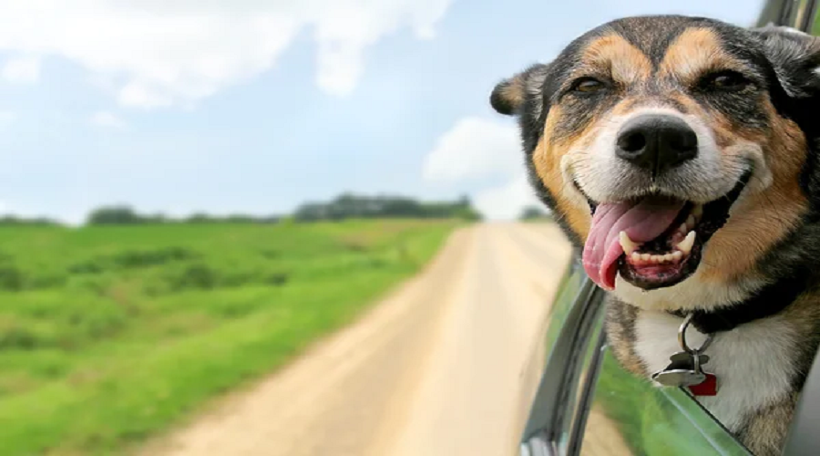
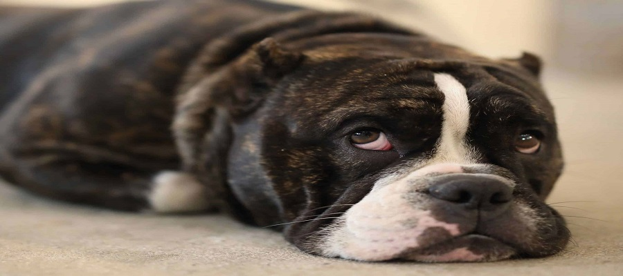
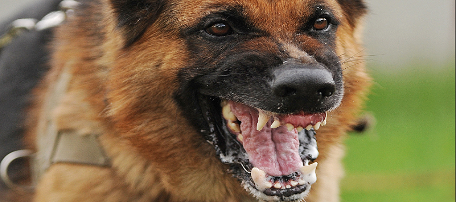

Just like a happy dog, it’s also very easy to spot an uncomfortable and worried dog from their body language, if you know what to look for. Signs to spot include:
1)A high and waggy tail. This is probably the most well-known sign your dog is a happy pooch.
2)Floppy ears.By this, we mean that their ears are relaxed, not tense or flattened against their head. Pricked upright ears are a sign of alertness – they tell you if your dog is happy or sad, just focused.
3)Their body’s relaxed. If your dog seems relaxed in their posture and not tense or stiff, this is a good indication they are feeling good. Loose shoulders, soft eyes without a fixed gaze, and a dose of ‘wiggliness’ or pure ‘flopped-outness’ are all clues that your dog’s feeling super chill.
4)They’re playful.A happy dog is more likely to want to play and leap around. Play “bows” are a great sign your dog is in the mood.
5)They lean in to you.A relaxed dog who enjoys your company is more likely to also enjoy your attention. They may come to you for attention and it’s a good sign if they lean into your hand when you stroke them.
Sometimes, when our dogs get very unhappy and feel threatened or extremely frightened, they feel like they have to resort to aggressive behaviour because, to them, it seems like there’s no other way out of a situation.
There are a range of reasons and situations which might cause a dog to feel threatened and these can be different for each dog. If a dog is in pain, this could also mean they are more likely to feel anxious and are at a higher risk of lashing out. The most important thing to look out for are the changes in body language, which will help you to identify if a dog is struggling in a certain situation. A dog is more likely to resort to aggressive behaviour if the signs that they are unhappy and worried have been ignored, so keep a close eye out for those too. Signs that a dog may become aggressive very soon include:
1)Low or tucked tail A stressed or unhappy dog may tuck its tail between its legs rather than wagging it high in the air. Just because their tail’s wagging doesn’t always mean they’re happy, either. While wiggly, happy, high tail wags are definitely associated with good feelings, a low or slow wags can indicate fear or insecurity.
2)Body positionA worried dog will also look tense rather than relaxed in the way that they hold themselves. They might shrink away, hold their head low and avoid eye contact by looking away If your dog goes very still, like a statue, that usually means they’re getting really uncomfortable
3)Ears are back.If your dog is stressed or anxious, their ears may seem pinned back and flat against their head.
4)They turn away from you. If your dog is unhappy with something you or someone else is doing, they’ll try to turn their head away from you. Some dogs might give you a quick lick on your hand or face before doing this if you’re paying close attention to them, as a signal that they’re done with close quarters for now.
5)Appeasement behaviour. Your dog might roll over onto their back, but stay stiff and still once there rather than doing it in a relaxed way. This means they’re worried and trying to let you know they aren’t out to hurt you. They may also lick their lips repeatedly or ‘yawn’; these are all signs they feel uncomfortable with the situation and are trying to give you low-key signals they want it to stop.
6)Hiding and walking away. If your dog is unhappy at something or someone making them stressed, they may try to hide behind you or another object, or take themselves off to another area if they can. Let them do this and don’t follow them or push the interaction, as your dog is letting you now they need a time-out.
Sometimes, when our dogs get very unhappy and feel threatened or extremely frightened, they feel like they have to resort to aggressive behaviour because, to them, it seems like there’s no other way out of a situation.
There are a range of reasons and situations which might cause a dog to feel threatened and these can be different for each dog. If a dog is in pain, this could also mean they are more likely to feel anxious and are at a higher risk of lashing out. The most important thing to look out for are the changes in body language, which will help you to identify if a dog is struggling in a certain situation. A dog is more likely to resort to aggressive behaviour if the signs that they are unhappy and worried have been ignored, so keep a close eye out for those too. Signs that a dog may become aggressive very soon include:
1)Stiff tail. An aggressive dog may have a stiff, straight tail that seems to shake rather than wag. Others may tuck their tail behind them.
2)Body position. Dogs may stand-alert with a stiff, tall body position and their head pointed upwards towards you. However, they might also lower their body to the ground cowering whilst baring their teeth, or shift their weight to the back of their body so they can spring.
3)Ears are forward or flat. Their ears may be pointing forwards or be pulled flat against their head, rather than being floppy and relaxed.
4)Eye contact. An aggressive dog will stare humans or other dogs straight in the eye, with a fixed stare. If a dog ever becomes still and stares straight at you, stop interacting immediately until the dog calms down.
5)Baring teeth. A dog showing aggression may bare their teeth and growl as a warning. Never ignore these signs as growls can quickly turn into dangerous bites if the dog still feels threatened and is unable to escape. However just because a dog hasn’t growled yet doesn’t mean they won’t bite so keep a close eye out for the other signs too.
Try to be understanding with your dog and don’t force them into situation where they will be uncomfortable. Keeping them in their comfort zone will mean you and your dog both have a great time and stay best of friends. If your dog is showing signs that they are anxious or stressed on a regular basis, take them to the vet as there could be an underlying cause. If there’s an obvious reason like a certain dog or situation, your vet can give you some initial pointers and recommend an accredited behaviourist or trainer as appropriate. If your dog is showing signs of aggression, then it is important to get them seen by a vet to rule out any medical conditions that might be causing them pain or stress. If a health problem has been ruled out, then any aggressive behaviours will need addressing by an accredited behaviourist.